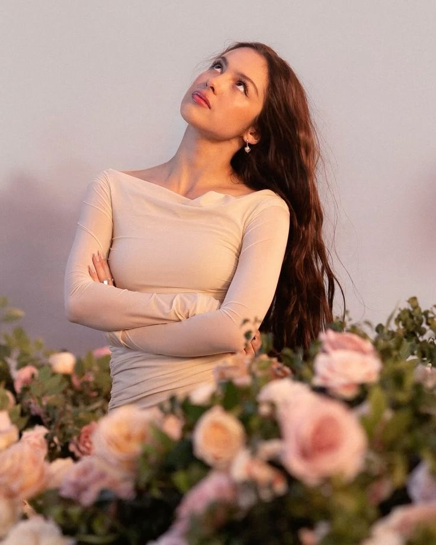
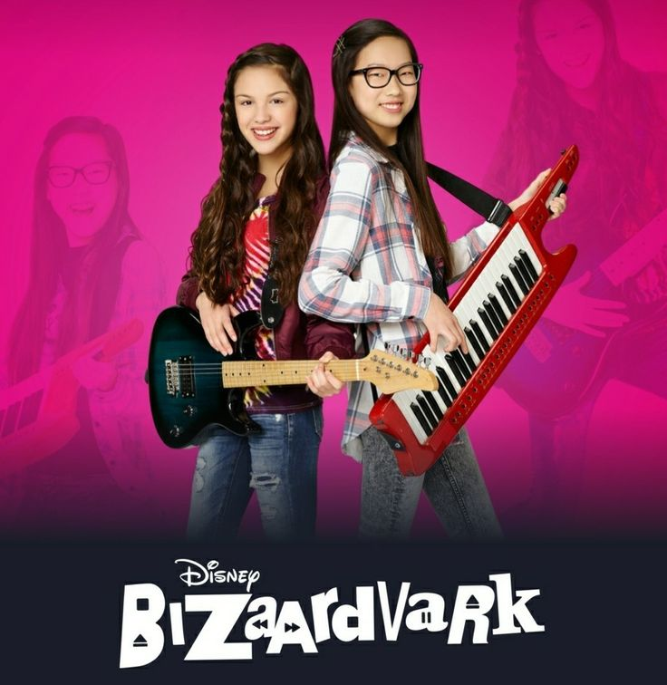
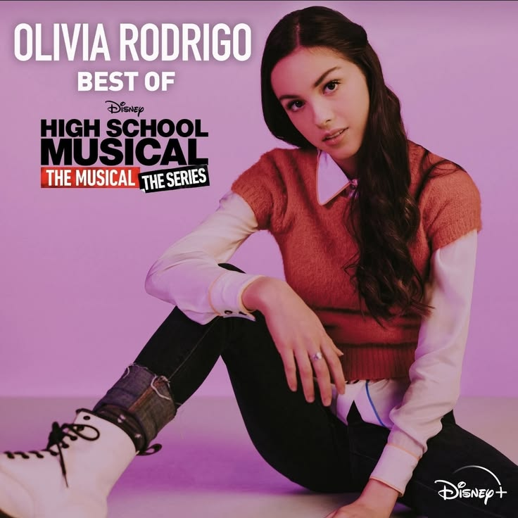
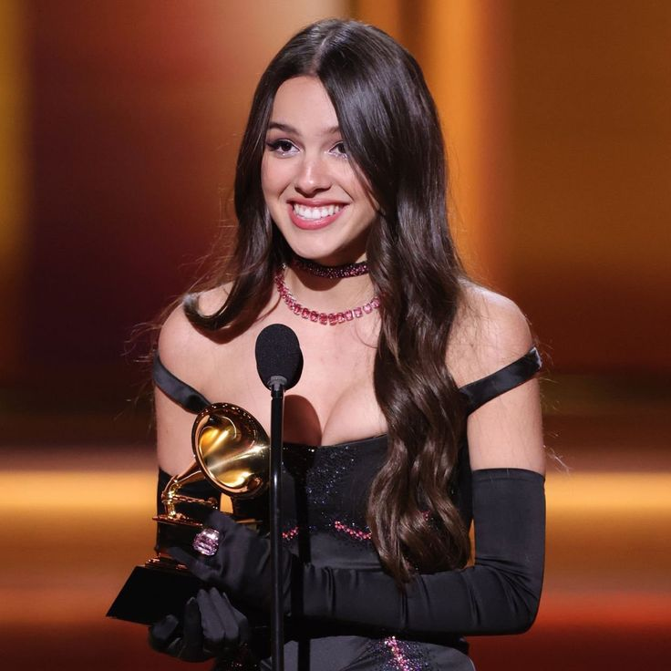
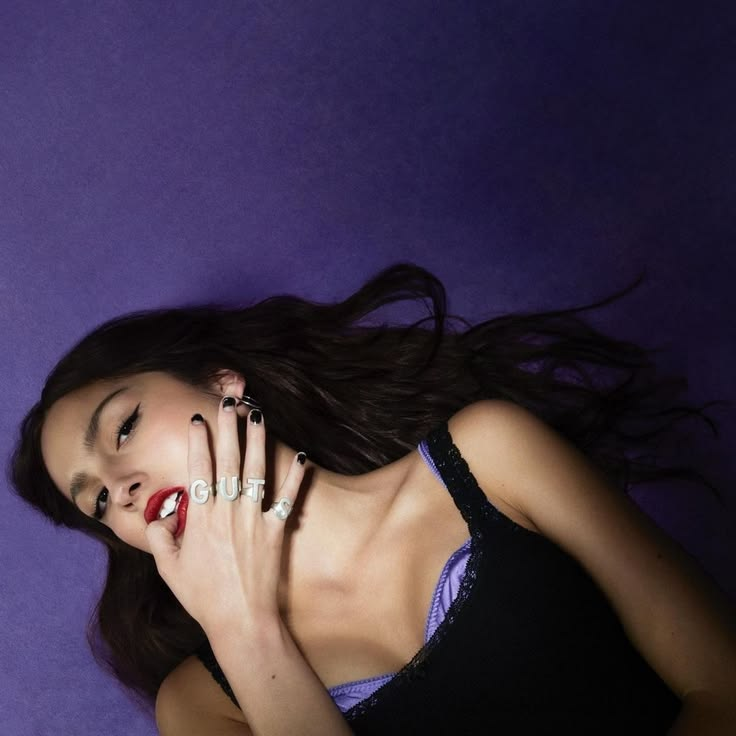
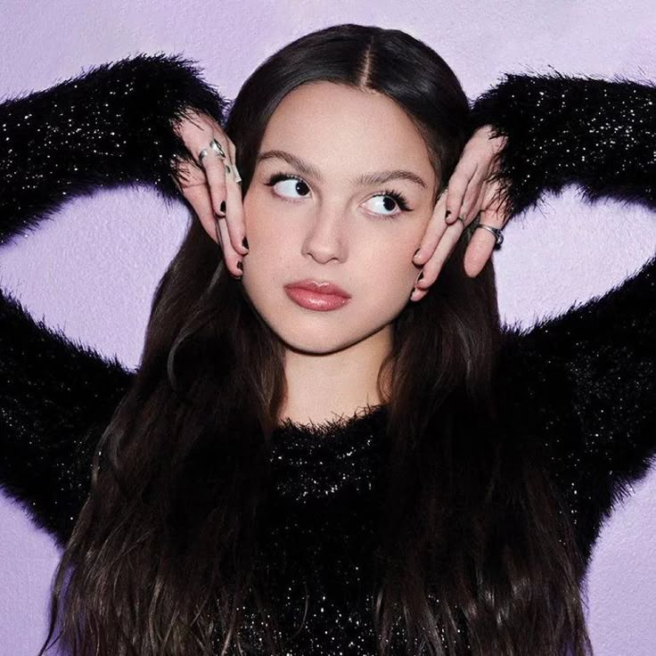
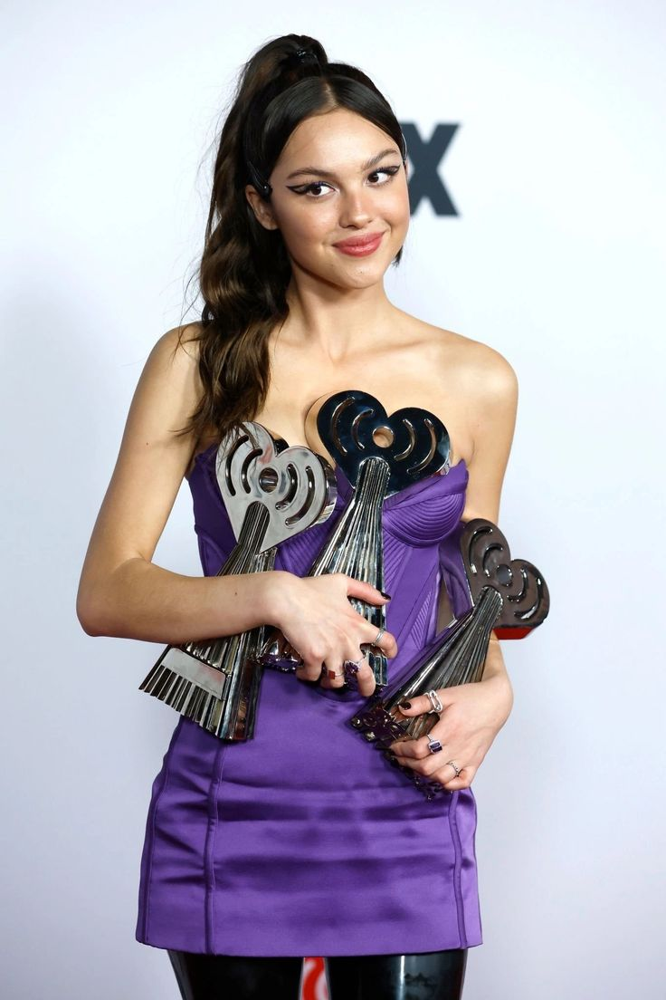
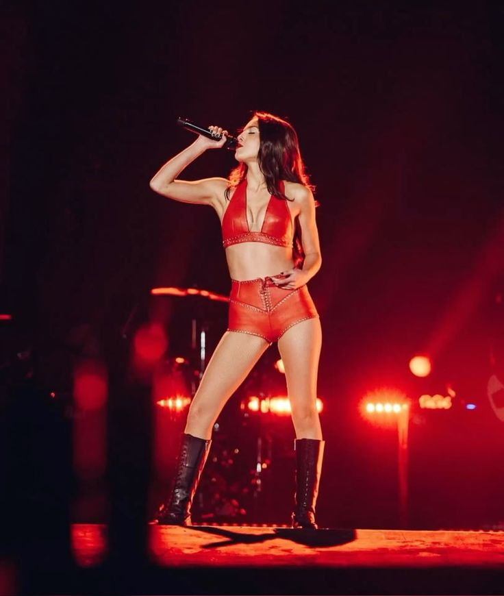
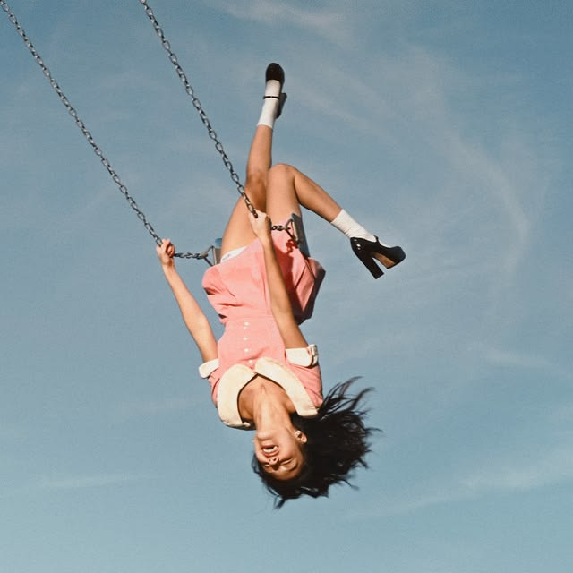
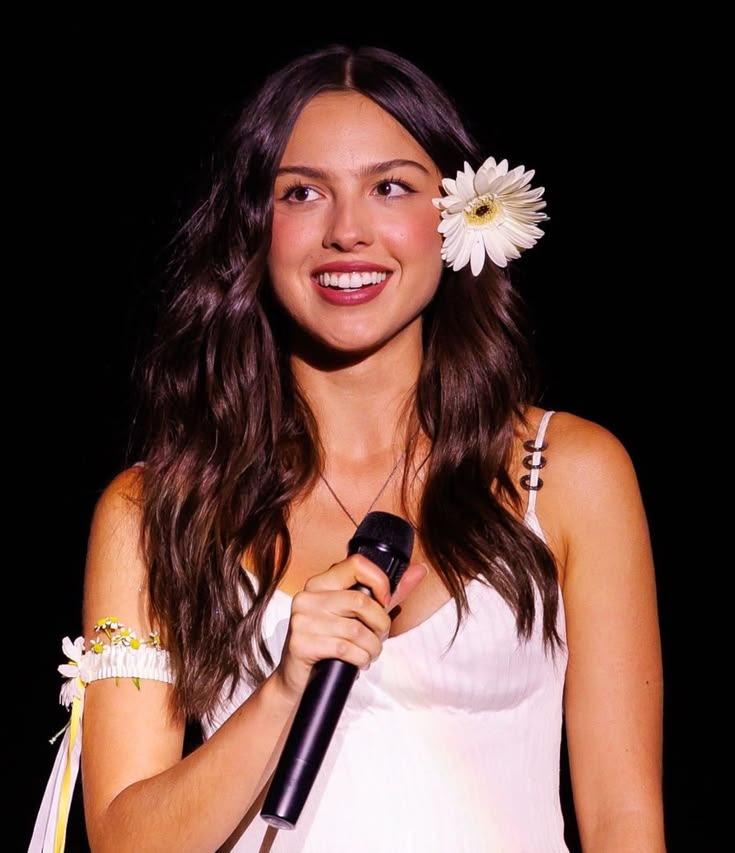

Olivia Isabel Rodrigo, nacida el 20 de febrero de 2003 en Murrieta, California, es una cantante, compositora y actriz estadounidense que se ha consolidado como uno de los iconos pop más influyentes de la generación Z.

Con ascendencia filipina por parte de su padre y estadounidense por su madre, creció rodeada de música, tomando clases de canto y piano desde muy pequeña e inspirándose en el rock alternativo que escuchaban sus padres, así como en grandes compositoras del pop moderno.

Su salto a la fama comenzó en la actuación. Tras algunos papeles menores, en 2016 se unió a Disney Channel para protagonizar la serie Bizaardvark con el papel de Paige Olvera. Su coestrella y hasta el día de hoy amiga fue Madison Hu que interpretaba a Frankie Wong.

En 2019 obtuvo el papel principal de Nini Salazar-Roberts en la serie de Disney+ High School Musical: The Musical: The Series. Durante esta producción, demostró abiertamente sus dotes de cantante al escribir e interpretar All I Want, tema que se volvió viral y le abrió las puertas de la industria musical.

En enero de 2021, con solo 17 años, firmó con Interscope y Geffen Records y lanzó su sencillo debut, Drivers License. La canción se convirtió instantáneamente en un fenómeno cultural global, rompiendo récords de reproducciones en Spotify y liderando las listas de éxitos durante semanas.

en mayo de ese mismo año, lanzó su álbum debut, SOUR, un trabajo aclamado por la crítica que combinaba balladry visceral con el resurgimiento del pop-punk en temas como Good 4 Uy Deja Vu. El álbum le valió tres premios Grammy, incluyendo Mejor Artista Nuevo.

Olivia consolidó su carrera en 2023 con su segundo álbum de estudio, GUTS. En este proyecto expandió su sonido hacia un rock alternativo más enérgico y audaz, abordando temas como el crecimiento personal, las presiones de la fama temprana y los altibajos emocionales de la juventud con sencillos como Vampire y Bad Idea Right?. Con sus masivas giras mundiales y su capacidad para conectar con el público a través de letras honestas y directas, Olivia Rodrigo se ha establecido como una figura referente de la música contemporánea.

En marzo de 2024, Olivia publicó la versión extendida del álbum siendo este GUTS Spilled, que incluyó canciones increibles como «obsessed», «girl i've always been» y «so american».

Gracias al álbum GUTS recibió premios como: el iHeartRadio Music Awards en 2024, el ASCAP Pop Music Awards en el mismo año, siendo reconocida por segunda vez en su carrera como Compositora del Año y el Billboard Live Music Awards, siendo nombrada Touring Artist of the Year debido al impacto en taquilla de su gira.

En febrero de 2024, Olivia comenzó el GUTS World Tour, la primera gira internacional en estadios y arenas de gran escala de su carrera, recorriendo Norteamérica, Europa, Asia y Oceanía con entradas agotadas en cuestión de minutos. También hizo su debut histórico en Argentina presentándose por primera vez durante la jornada de la 10.ª edición del Lollapalooza Argentina en el Hipódromo de San Isidro.

El 12 de junio de 2026 estrenó su tercer albúm, "You Seem Pretty Sad for a Girl So in Love". Este álbum, a diferencia de la rabia adolescente de SOUR o el pop-punk directo de GUTS, este proyecto explora las complejas contradicciones de la adultez joven, retratando la convivencia entre el enamoramiento, las expectativas no cumplidas y la melancolía persistente.En la camción«What's Wrong with Me» estuvo como invitado Robert Smith, vocalista de The Cure.

En agosto de 2026 promovió el festival Daisy Chain Fields en California, un evento con un cartel íntegramente femenino destinado a recaudar fondos para causas benéficas.
